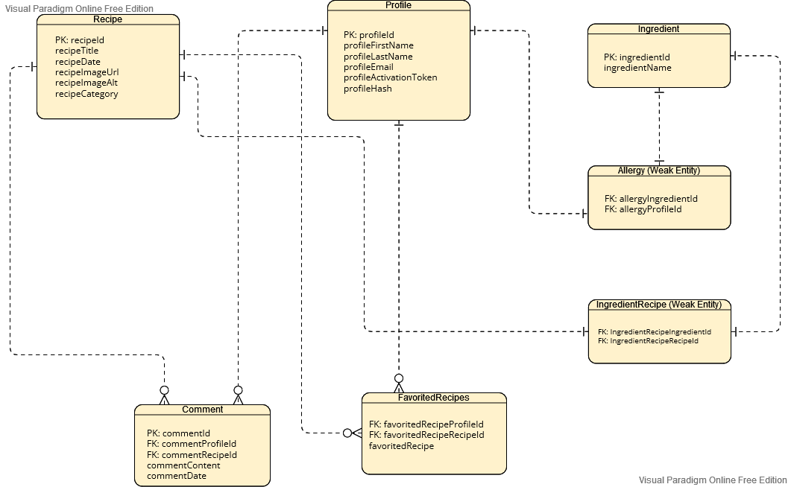

Profile
- PK:profileId
- profileFirstName
- profileLastName
- profileEmail
- profileActivationToken
- profileHash
Ingredient
- PK:ingredientId
- ingredientName
Allergy (Weak Entity)
- FK:allergyIngredientId
- FK:allergyProfileId
Recipe
- PK:recipeId
- recipeTitle
- recipeDate
- recipeImageUrl
- recipeImageAlt
- recipeCategory
IngredientRecipe (Weak Entity)
- FK:ingredientRecipeIngredientId
- FK:ingredientRecipeRecipeId
FavoritedRecipe
- FK:favoritedRecipeProfileId
- FK:favoritedRecipeRecipeId
- favoritedRecipeDate
Comment
- PK:commentId
- FK:commentProfileId
- FK:commentRecipeId
- commentContent
- commentDate
Relationships
- Foreign Key favoritedRecipeProfileId points to Primary Key profileId
- Foreign Key favoritedRecipeRecipeId points to Primary Key recipeId
- Foreign Key commentProfileId points to Primary Key profileId
- Foreign Key commentRecipeId points to Primary Key recipeId
- Foreign Key ingredientRecipeIngredientId points to Primary Key ingredientId
- Foreign Key ingredientRecipeRecipeId points to Primary Key recipeId
- Foreign Key allergyId points to Primary Key allergyIngredientId
- Foreign Key allergyProfileId points to Primary Key profileId
- One profile can comment on many recipes
- Many recipes can be favorited by many profiles
ERD
